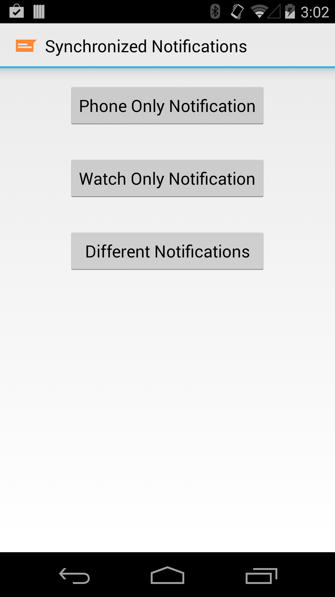
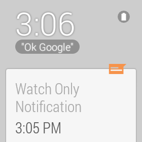
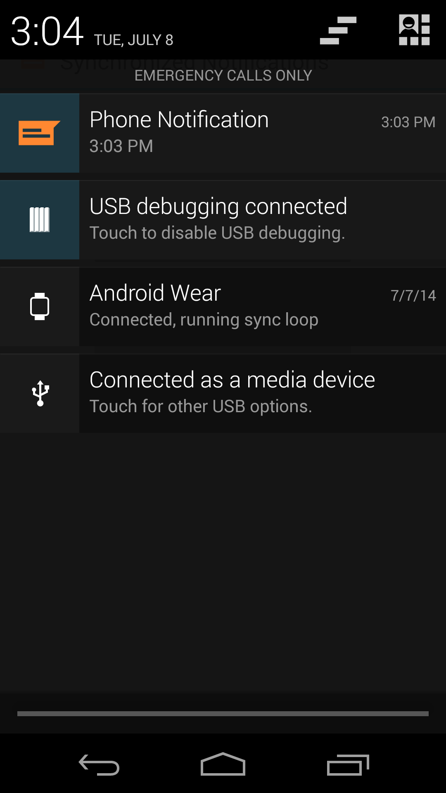
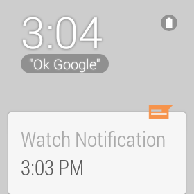

About: This sample creates three simple types of notifications:
A phone-only notification
A watch-only notification
A pair of synchronized phone and watch notifications where the content shown
on the watch notification is different from the one on the phone. These notifications
are synchronized in the sense that dismissing one results in dismissal of the other one
(all based on the Data Layer APIs).
How to run: Install the Application APK on the companion, and the Wearable APK on the
wearable. Start the sample by running the SynchronizedNotifications application on the companion.
Screenshots:




From left to right: notification options, Watch Only Notification, Different
Notifications - Phone, and Different Notifications - Watch